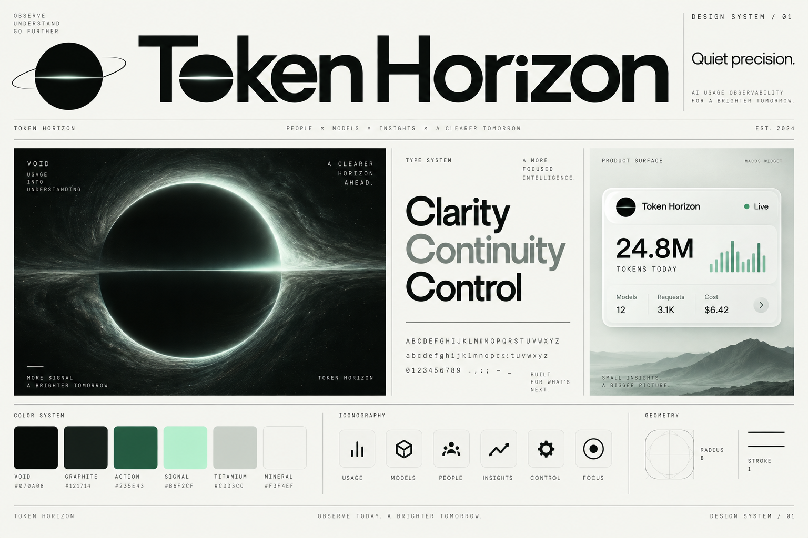
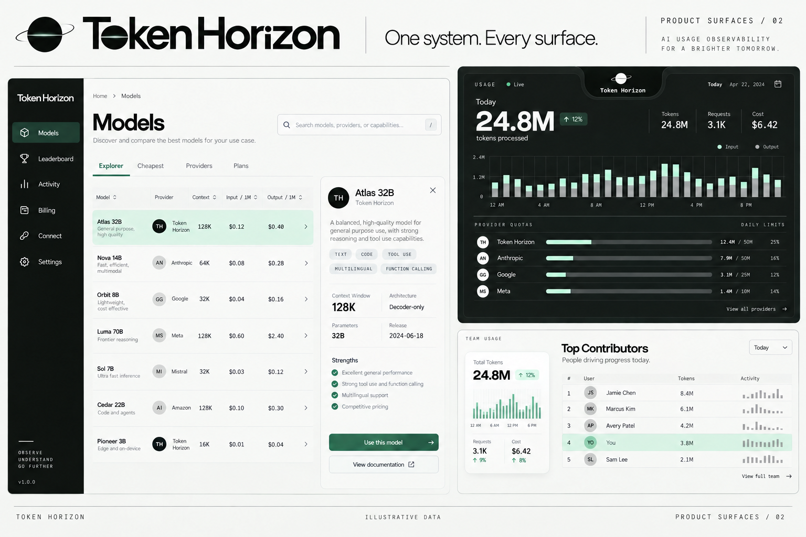
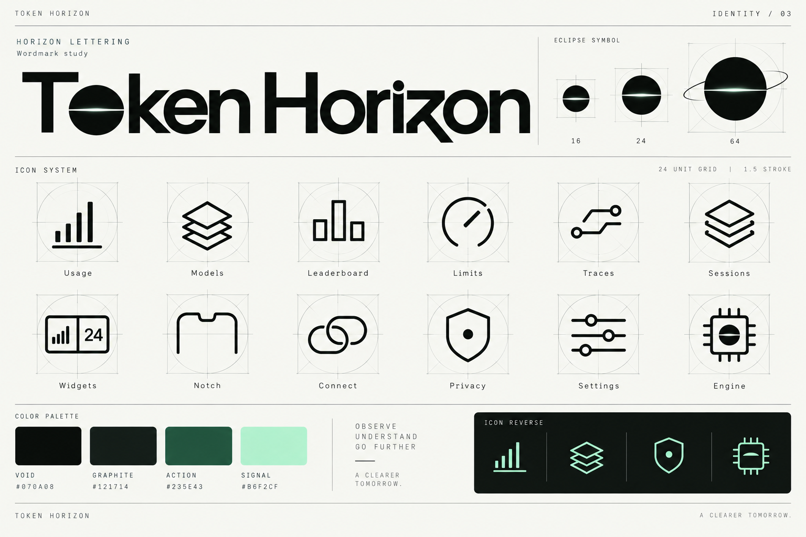
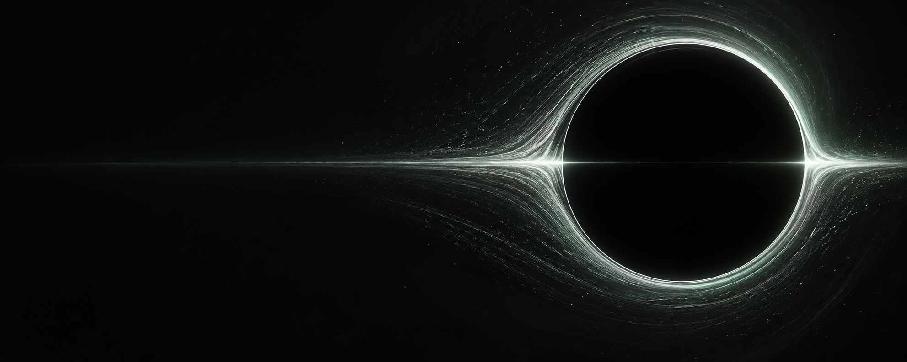
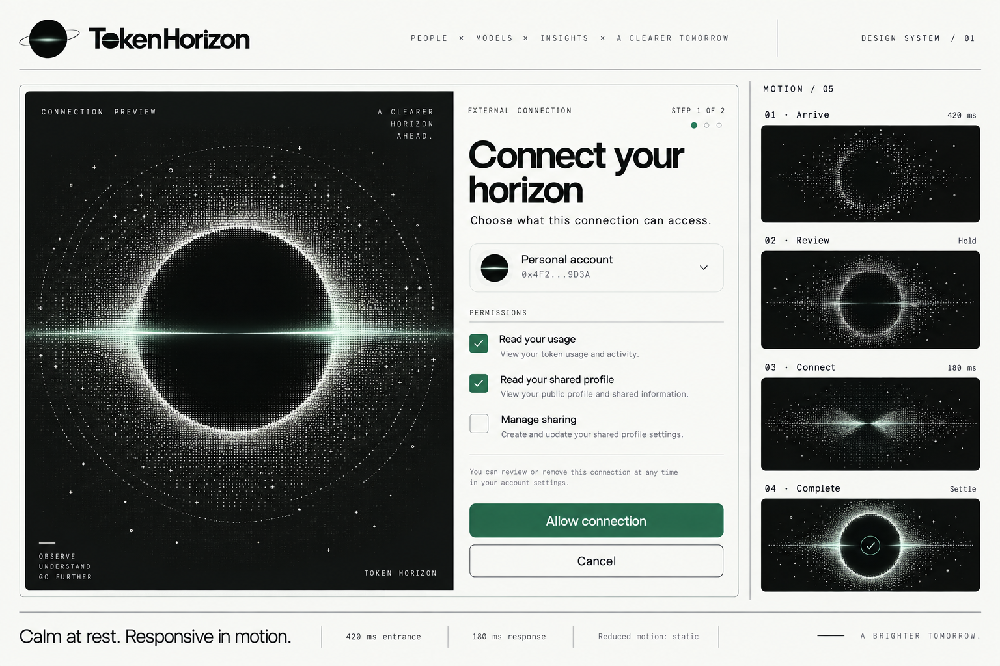

Make the signal visible.
Useful numbers lead. Labels, units and freshness travel with them. Fine rules give dense information room to breathe.
Design system · Volume 01
A clear view of your AI world.
One visual language, from the notch
to the horizon.
The point of view
Useful numbers lead. Labels, units and freshness travel with them. Fine rules give dense information room to breathe.
The eclipse, horizontal seam and measured geometry carry from a 16-pixel mark to a full screen.
Motion explains a change, then comes to rest. Materials preserve legibility. Every action has a clear state.
01 / Foundations
#070A08#121714#235E43#B6F2CF#CDD3CC#F3F4EFForest carries actions on light surfaces. Mint carries emphasis on dark surfaces. Color always has a label, shape or position doing the same work.
Download CSS tokens ↗Hubot Sans / Extended 112
Beyond
the ordinary.
Three voices. One hierarchy.
Hubot Sans gives the display layer its technical character. Extended proportions, open counters and tight optical spacing create the Horizon treatment.
Platform system text keeps long explanations and native controls familiar. Body text starts at 16 pixels on the web.
24.8M 128K $6.42
09:41:08 /mcp/public
JetBrains Mono carries units, timestamps and technical identifiers. Tabular figures keep changing values steady.
View the custom wordmark study ↗02 / Iconography
162464The orbit disappears at small sizes. The horizontal seam remains.
Download the master symbol ↗
03 / Components
| Period | Input | Output |
|---|
A field specimen. This value stays in this page.
CurrentUpdated just now
StaleLast seen 12 min ago
UnavailableReconnect to continue
Six-pixel controls. Twelve-pixel panels. One-pixel separators. Reserve glass and elevated shadows for transient surfaces.
Download JSON tokens ↗04 / Motion
Notch / entrance specimen
One entrance, anchored to the screen edge. Content follows the enclosure.
Local controls respond immediately and settle with a short ease-out.
Ready. System reduced-motion preferences are also respected.
05 / Art direction
Five images generated with imagegen establish the visual direction. The boards are illustrative; the specification and tokens define the implementation rules.




